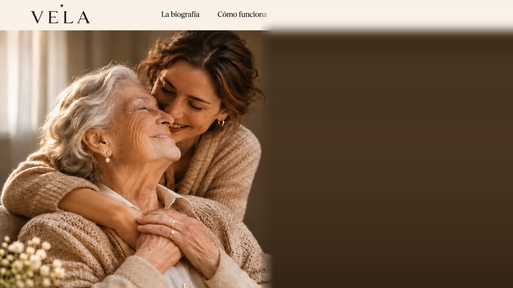
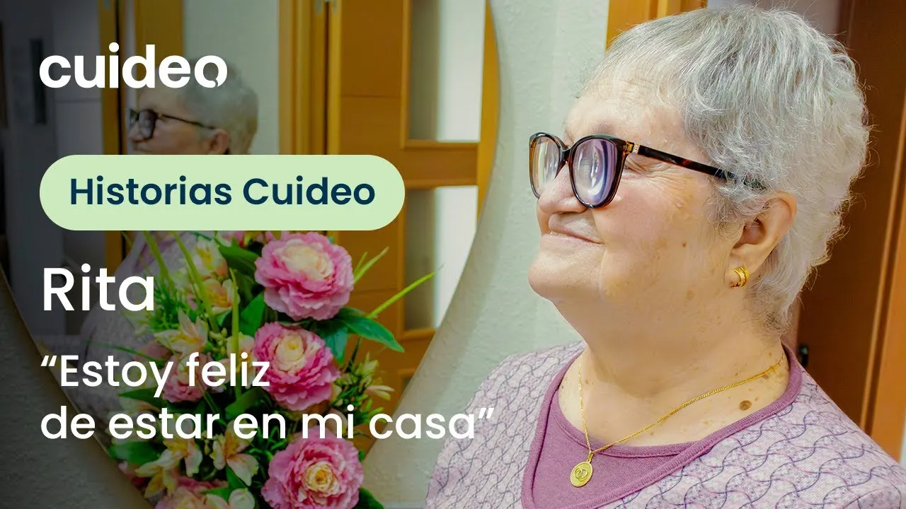

Su vida, convertida
en una historia
para siempre.
Biografías digitales personalizadas, con sobre de regalo y tarjeta QR física.
Desde 25 € · Pago único · Sobre con tarjeta QR física incluido
Cuando una voz se escucha, una vida deja de ser una lista de fechas.
Hay recuerdos que viven en una conversación, en una fotografía o en las palabras que alguien repite desde hace años. Escucharlos es el primer paso para conservarlos.

Escucha el origen. Descubre el resultado.
Así pasa una conversación cotidiana en voz alta a convertirse en un recuerdo coral de toda la familia y, finalmente, en páginas maquetadas para siempre.

Carmen, 78 años
Nota de voz · Capítulo 2: Veranos en el pueblo
«Cuando llegábamos en el coche de línea ya olía a higuera y a tierra mojada. Mi madre nos dejaba correr descalzos hasta el pozo antes de llamar a cenar.»

Miradas compartidas
2 aportaciones recibidas por enlace familiar
Lucía · Hija
«Siempre nos preparaba almendras garrapiñadas en una lata azul antes de volver al internado en septiembre. Todavía guardo la receta en un papel suyo.»
Marcos · Nieto
«Lo que mejor recuerdo es verla coser botones mientras me enseñaba a decir los nombres de los ríos de memoria sin mirar el mapa.»


Edición maquetada en colección Letter
Las voces y los recuerdos familiares se funden en capítulos cuidados, listos para leer en cualquier dispositivo o abrir desde el sobre con tarjeta QR.
Explorar libros completos en EjemplosToda vida deja huellas. VELA las convierte en capítulos.
Desde la infancia hasta hoy, cada etapa encuentra su lugar sin reducir una vida a una lista de fechas.
Infancia
La casa donde empezó todo y las primeras historias que todavía recordamos.
Decisiones
Los caminos que cambiaron nuestra vida y las oportunidades que nos hicieron crecer.
Familia
Las personas, las costumbres y los momentos compartidos.
Oficio
Los años de trabajo, los aprendizajes y las experiencias que nos definieron.
Hoy
Una historia que continúa escribiéndose.

Una historia íntima merece un espacio seguro.
La memoria familiar no es contenido para redes ni material de entrenamiento público. Cuidamos cada archivo con el respeto de un archivo privado de casa.
-
Acceso privado bajo enlace familiar
Solo leen y escuchan la biografía las personas a las que decidas entregar el enlace o la tarjeta QR.
-
Propiedad íntegra para tu familia
Nunca cedemos ni vendemos vuestros relatos, voces o fotografías. Puedes descargar o eliminar tu archivo en cualquier momento.
-
Sin suscripciones mensuales
Pago único desde 25 € según la extensión que necesites, para que puedas regalar y construir el relato sin prisas.
-
Entrega física incluida en cada biografía
Sobre lacrado artesanal con tarjeta y QR directo para regalar en mano el día que elijas.
Antes de empezar a contar.
Las dudas importantes suelen ser sencillas: precio, privacidad, participación y qué pasa cuando la biografía está lista.
¿Tienes una consulta específica?
Estamos aquí para acompañarte en cada paso del proceso.
Hablar con nosotros →1. ¿Qué incluye el precio de la biografía? +
Incluye la maquetación editorial completa organizada en capítulos, el acceso digital multiplataforma (móvil, tablet, PC), la descarga de la biografía en PDF de alta calidad, y la entrega física a domicilio de un sobre marfil VELA con tarjeta personalizada de dedicatoria y código QR de acceso.
2. ¿Puedo crear mi propia autobiografía? +
Sí. Puedes redactar tus propias memorias en primera persona. VELA te formulará preguntas de apoyo para inspirarte y ayudarte a estructurar tus recuerdos etapa a etapa.
3. ¿Puedo crear la biografía de otra persona? +
Por supuesto. Es el uso más habitual: hijos o nietos que quieren homenajear y regalar la biografía a sus padres o abuelos reuniendo anécdotas y fotos familiares.
4. ¿La historia será pública? +
No. Todas las biografías en VELA son estrictamente privadas. Sólo tienen acceso tú y las personas con quienes decidas compartir el enlace o la tarjeta QR física.
5. ¿Los colaboradores necesitan una cuenta? +
No. Tus familiares y amigos pueden enviar notas de voz, textos y fotografías a través de un enlace privado directo, sin registros obligatorios ni contraseñas.
6. ¿Qué hace exactamente VELA? +
VELA es un asistente editorial inteligente. Te escucha, transcribe testimonios orales, sugiere temas de conversación, organiza los recuerdos en capítulos narrativos y maqueta la biografía en el estilo editorial que elijas. Tú siempre tienes el control final.
7. ¿Qué ocurre cuando vence el plazo? +
El plazo se refiere al tiempo para recopilar testimonios de tus colaboradores. Al finalizar ese periodo, la biografía se consolida, se genera la edición definitiva y permanece disponible para siempre en formato digital y PDF.
8. ¿Qué diferencia hay entre los planes? +
Los planes varían en la extensión de la biografía (de 15 a 75 páginas), el número de fotografías incluidas y los días disponibles para recibir colaboraciones familiares. Todos comparten la misma calidad editorial y el sobre físico con QR.